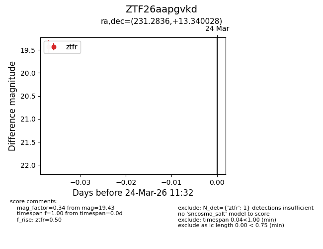
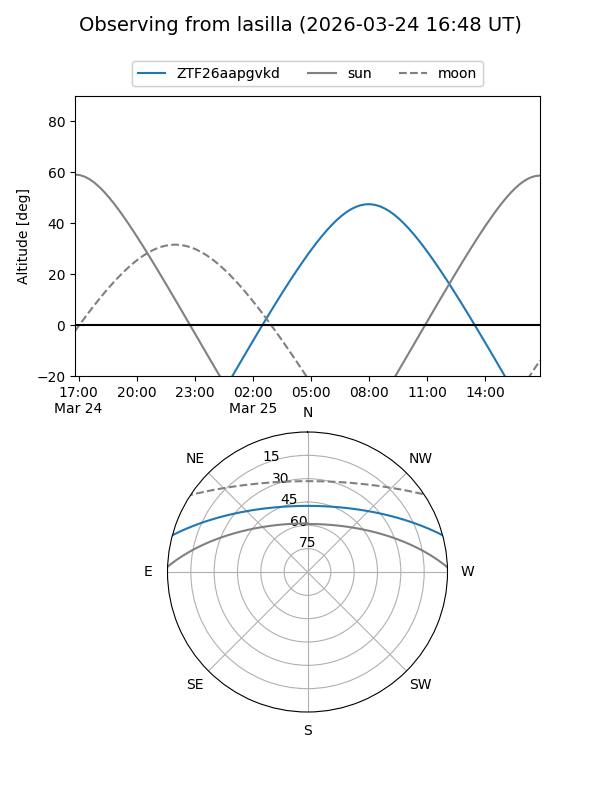
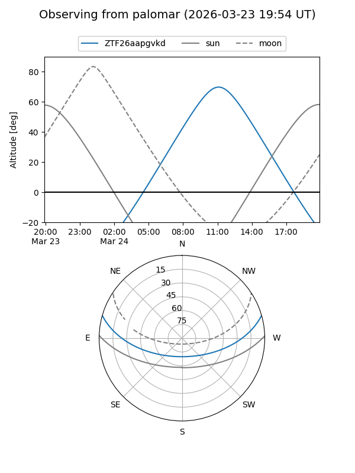

ZTF26aapgvkd
Target ZTF26aapgvkd at 2026-03-24 11:34
Aliases and brokers:
FINK: link
Lasair: link
ALeRCE: link
alt names
ZTF26aapgvkd (ztf,fink_ztf)
Coordinates:
equatorial (ra, dec) = 231.2836,+13.34003
equatorial (HMS+DMS) = 15:25:08.06,+13:20:24.10
galactic (l, b) = (19.6948,+51.59515)
Flags:
Photometry:
last ztfr=19.43
1 ztfr detections
Lightcurve

Visibility


Additional plots